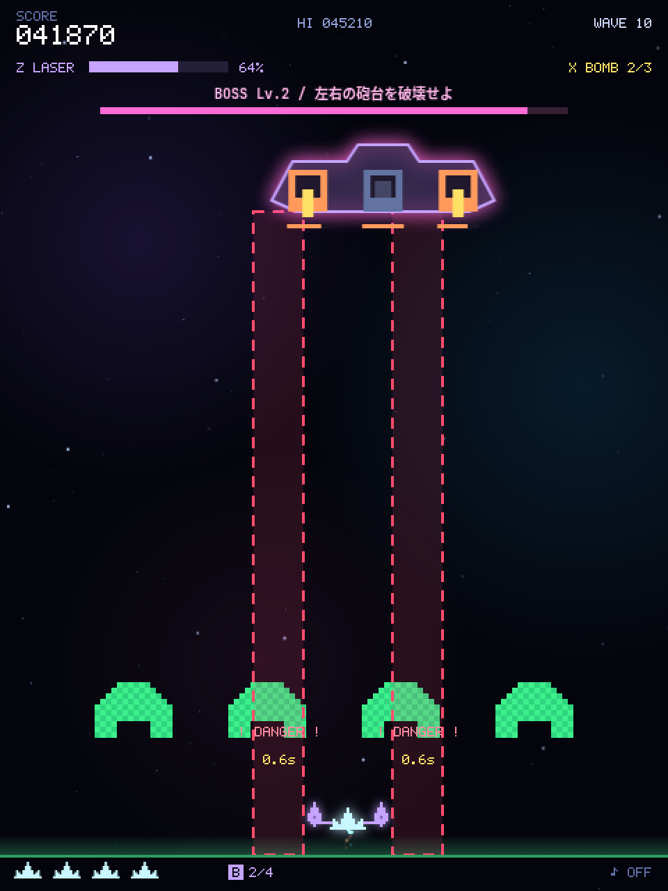
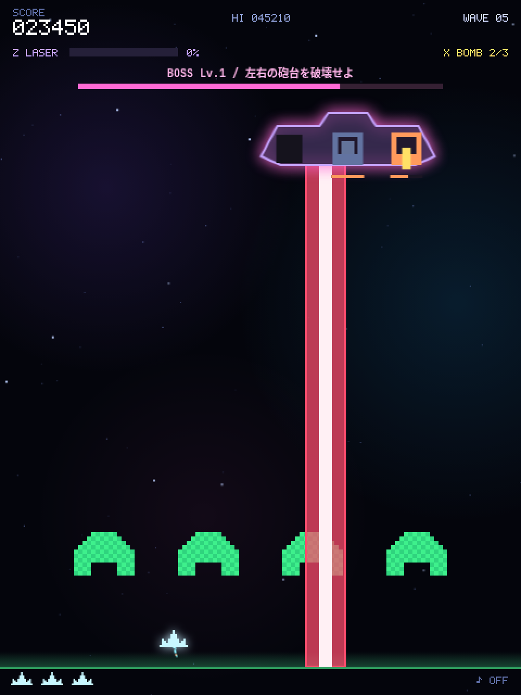

CHAPTER 15 · 全23項目
大型戦艦のボス戦
部位ごとの耐久値、コアの保護、予告位置を固定する攻撃と、登場するたびに上がるボスのレベルを実装します。
主な参照先：makeBoss / coreExposed / damageBossPart / startBossAttack / fireBossVolley / updateBoss / BOSS_SWAY
ボスを3つの部位に分ける
function makeBoss() {
const level = wave / 5, hpLevel = Math.min(level, BOSS_HP_LEVEL_MAX);
boss = {
level, x: W / 2, y: 112, t: 0, attackT: 2, attackN: 0, warning: 0, laserT: 0, lanes: [],
parts: [
{ kind: "gun", offset: -54, hp: 7 + hpLevel * 2, max: 7 + hpLevel * 2, flash: 0 },
{ kind: "gun", offset: 54, hp: 7 + hpLevel * 2, max: 7 + hpLevel * 2, flash: 0 },
{ kind: "core", offset: 0, hp: 20 + hpLevel * 8, max: 20 + hpLevel * 8, flash: 0 },
],
};
}const BOSS_HP_LEVEL_MAX = 4; // ボスの耐久力は Lv.4(ウェーブ 20)で頭打ち。以降は攻撃の速さで手強くなる
const BOSS_TWIN_GAP = 50; // Lv.2 からの挟み撃ちレーザー: 自機の左右この距離に 2 本。動かなければ間に収まる(画面端では内側へずれる)5ウェーブごとに大型戦艦を作ります。左右の砲台と中央コアを parts に入れ、各部位に現在HPと最大HPを持たせます。level はウェーブ数÷5で、5ウェーブ目がLv.1、10ウェーブ目がLv.2です。耐久値は hpLevel、つまり level を BOSS_HP_LEVEL_MAX の4で止めた値から求め、砲台は 7 + hpLevel × 2、コアは 20 + hpLevel × 8 です。5ウェーブ目なら砲台は各9、コアは28、10ウェーブ目なら砲台は各11、コアは36、20ウェーブ目以降は砲台が各15、コアが52のまま増えません。後半はボス戦が長くなるのではなく、攻撃が激しくなる作りです。自機の弾は通常弾も連結砲の弾も1発で1ダメージなので、5ウェーブ目の砲台は9発で壊れます。部位の画面座標はボス本体の座標に offset を足して求めます。
左右の砲台を壊すまでコアを保護する
function coreExposed() { return boss && boss.parts.slice(0, 2).every(p => p.hp <= 0); }function damageBossPart(part, amount, source = "shot") {
if (!boss || part.hp <= 0 || amount <= 0) return;
if (part.kind === "core" && !coreExposed()) return;
const r = bossPartRect(part), damage = Math.min(part.hp, amount);
part.hp = Math.max(0, part.hp - amount); part.flash = 0.08;
if (source === "shot") gainCharge(damage * 1.5);
if (part.hp > 0) return;
spawnBurst(r.x + 14, r.y + 15, "#ff9a5c", 28, 180);コアへの攻撃を受けた時点で、両方の砲台のHPが0以下かを調べます。通常弾だけでなくレーザーやボムも同じ関数を通すため、このルールを共用できます。通常射撃のダメージだけがゲージ充電につながります。
予告、発射、待機の3段階
- 予告1.1秒。狙うx座標を固定
- 発射0.6秒。幅36 pxの危険範囲
- 待機横移動し、次の攻撃を待つ
待機中に attackT が0になると startBossAttack() が呼ばれ、その瞬間の player.x から攻撃する列を決めて boss.lanes に保存します。予告が終わっても位置を追い直さないため、プレイヤーは予告を見て逃げられます。
// 次の攻撃までの時間。コアが露出すると速まり、Lv.4〜6 では 1 段ごとに 0.15 秒ずつ縮む。
function bossAttackInterval() {
return (coreExposed() ? 1.5 : 2.2) - clamp(boss.level - 3, 0, 3) * 0.15;
}
// 攻撃の予告を始める。レーザーの位置(lanes)はこの時点で固定し、予告と同じ場所に撃つ。
// Lv.1 は自機を狙う 1 本。Lv.2 からは 1 回おきに、自機の左右へ 2 本の挟み撃ち(動かなければ間に収まる)。
function startBossAttack() {
const twin = boss.level >= 2 && boss.attackN % 2 === 1;
if (twin) {
const x = clamp(player.x, 22 + BOSS_TWIN_GAP, W - 22 - BOSS_TWIN_GAP);
boss.lanes = [x - BOSS_TWIN_GAP, x + BOSS_TWIN_GAP];
} else boss.lanes = [clamp(player.x, 22, W - 22)];
boss.attackN++;
boss.warning = 1.1;
boss.attackT = bossAttackInterval();
beep({ f0: 740, dur: 0.12, type: "square", vol: 0.07 });
}Lv.1は自機を狙う1本だけです。Lv.2からは attackN が奇数の回、つまり1回おきに、自機の左右へ BOSS_TWIN_GAP の50 pxずつ離れた2本で挟み撃ちにします。危険範囲の幅は36 pxなので、2本の内側の端は自機の中心から32 px、自機の半分の幅は13 pxで、動かなければ間に収まります。画面の端では2本とも画面に収まるよう中心を内側へずらすため、端にいると逃げる必要があります。

次の攻撃までの時間は bossAttackInterval() で決めます。コアが露出すると2.2秒から1.5秒に縮み、Lv.4〜6では1段ごとにさらに0.15秒縮みます。
// 予告が終わった瞬間の射撃。残っている砲台は 3 方向弾、Lv.3 からは船体中央が自機へ扇状の 5 発も撃つ。
function fireBossVolley() {
const vy = 180 + Math.min(wave * 3, 90);
for (const part of boss.parts) {
if (part.hp <= 0 || part.kind !== "gun") continue;
for (const vx of [-75, 0, 75]) eBullets.push({ x: boss.x + part.offset, y: boss.y + 40, w: 3, h: 9, vx, vy });
}
if (boss.level >= 3) {
const x = boss.x, y = boss.y + 44, aim = Math.atan2(PLAYER_Y - y, player.x - x);
for (const da of [-0.36, -0.18, 0, 0.18, 0.36]) {
const a = aim + da;
eBullets.push({ x: x - 1.5, y, w: 3, h: 9, vx: Math.cos(a) * vy, vy: Math.sin(a) * vy, aimed: true });
}
}
}予告が終わってレーザーを撃つ瞬間に fireBossVolley() が弾も撃ちます。生きている砲台は3方向に広がる弾、Lv.3からは船体の中央が自機を狙った扇状の5発です。扇は自機への角度 aim を Math.atan2() で求め、±0.18・±0.36ラジアンずらした向きに同じ速さで飛ばします。狙い撃ちの弾には aimed を付け、画面では赤く描きます。
function inBossLane(rect) {
for (const x of boss.lanes) {
if (hit(rect, { x: x - 18, y: boss.y + 40, w: 36, h: GROUND_Y - boss.y - 40 })) return true;
}
return false;
}発射中は inBossLane() で、自機がどれかの列に重なっていないかを毎フレーム調べます。列が1本でも2本でも同じ処理で判定できます。

動いている間だけ時計を進める
const BOSS_SWAY = 0.45; // ボスが左右に揺れる速さ(角速度)。振れ幅は ±130px } else {
// 予告・照射中は止まるので、移動中だけ時間を進める(止まっている間も進めると攻撃後に瞬間移動する)。
boss.t += dt;
boss.x = W / 2 + Math.sin(boss.t * BOSS_SWAY) * 130;
boss.attackT -= dt;待機中のボスは W / 2 + Math.sin(boss.t * BOSS_SWAY) * 130 の位置にいて、画面中央から左右に最大130 px揺れます。BOSS_SWAY は揺れる速さで、0.45なら1往復に約14秒かかります。
boss.t += dt を待機中の分岐の中に置いているのが大切な点です。予告と発射の間 (合わせて1.7秒) はボスが止まっているので、時計も止めておきます。もし分岐の外で毎フレーム時計を進めると、止まっている間も boss.t だけが進み、動き出した瞬間に Math.sin() の値が飛んで位置がずれます。以前のバージョンはこの書き方 (揺れの速さは0.65) で、攻撃のあとにボスが最大140 pxほど瞬間移動していました。部位の当たり判定も boss.x から求めるので、瞬間移動すると狙って撃った弾まで外れてしまいます。移動中だけ時計を進めれば、ボスは止まった位置からなめらかに動き出します。
撃破と攻撃中断
コアを破壊するとボスと敵弾を消し、得点を加え、ボムを1個補充します。ボムを使う場合は warning と laserT を0にし、次の攻撃までの待ち時間を設定するため、予告中も発射中も中断できます。
ボス戦では通常弾を5発まで撃てる
// ボスは遠く弾の到達に時間がかかるので、ボス戦では画面内の通常弾の上限を緩める。
const maxB = (active.rapid > 0 || active.wide > 0) ? 12 : boss ? 5 : 3;画面内に同時に出せる通常弾の数は、ふだんは3発、WかRが有効なら12発です。ボス戦ではW・Rがなくても上限を5発に緩めています。ボスは画面上部の遠い位置にいて、弾が届くまでに時間がかかるためです。連結砲の弾はこの上限に数えず、1門につき1発までです。